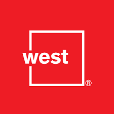
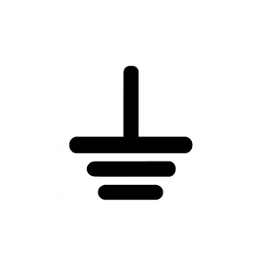
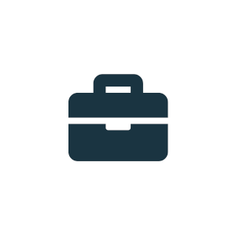
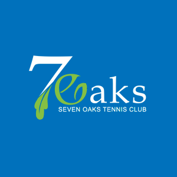

Celina Respall
Connect on LinkedIn View on GitHub PrintQualifications
- Skilled in web UX/UI design and visual design, with expertise in conceptualizing, solutioning and delivering engaging user and visual experiences
- Expertise in creating design systems and integrating it in frontend frameworks and systems to ensure the end product has design parity with mastery in how design translates to code and strong attention to detail
- Expertise in designing, developing and implementing user interface designs for various web platforms and applications
- Proficient in current web design standards, best practices, development technologies, usability, accessibility standards, and user experience
- Strong understanding of content strategy and visual information architecture
- Strong analytical and problem-solving skills with competency in cross browser testing, debugging, managing and supporting websites, as well as strong commitment to high-quality service
- Self motivated team player who is flexible and able to adapt to changing demands with proven ability to prioritize while working with multiple tasks and projects
Education
Bachelor of Arts, New Media Studies
- Joint Program with Major in New Media Studies, Minor in English and Studio Arts
- User Experience, User Interface Design, User Interface Development, Human-Centered Design, Human-Computer Interaction, Visual Design
- Theoretical and practical knowledge of design, usability, accessibility, user experience, development and best practices
- Training in prototyping and user testing tools
- Training in digital media production such as graphic design,photography, film, video creation, sound editing, and flash animation
User Experience Design Certification
- Core concepts and principles of UX Design
- Understanding the human-centered design process
- Understanding the user-centered UX Design Process
Experience
I&ITS, University of Toronto Mississauga
I work at the intersection of design and development, shaping the
digital
experience for UTM's web platforms as the product owner of the UTM Drupal Framework.
I'm the
driving force behind UTM's Drupal multisite infrastructure, product development, and design
system, ensuring the platform is visually cohesive, accessible, and built to last.
Role Breakdown:
50% Development & Implementation,
30% Solutions, Design, Prototype & User Testing,
20% Administering and Support
Technical Environment:
Drupal
HTML
CSS/SASS
Javascript
Git
Symfony
Twig
Figma
Miro
Docker
Linux
Mysql
Apache
PHP
Google Analytics
Clarity
Responsibilities & Achievements
- Designs, develops, implements and administers UTM’s Drupal Framework and Multisite infrastructure
- Designs, develops, and maintains design systems, standards, and styles guides for visual and interface design of digital platforms such as the UTM Website and various internal applications
- Designs and develops responsive websites and web-based applications while ensuring branding and accessibility standards (AODA, WCAG AA/AAA) compliance
- Analyzes, designs, and develops technical solutions for highly complex IT problems
- Analyzes data, gathers feedback, and conducts usability testing for web applications
- Analyzes and implements programming solutions to ensure compliance with best practices and industry standards
- Meets and interviews clients, stakeholders, and editors to gather requirements for the solution
- Analyzes discovery materials such as analytics, user experience feedback, requirements and translating into user stories and actionable tasks
- Creates prototypes of varying fidelity with UX design tools such as Figma
- Leads collaborative solutioning sessions with the core web team
- Analyzes, reviews, and evaluates design solutions to plan for continuous integration and improvements
- Presents and demonstrates design solutions to both technical and non-technical audiences such as the the core teams, partners, stakeholders
- Reviews ITIL processes and works with service teams to establish Digital Portfolio Management (DPM) mappings for Web Technology Services service offerings
- Collaborates with PM teams and advocates for a dual track agile process to align iterative user centered design processes with agile build development processes
- Improves workflow processes and uses AI to enable rapid prototyping, efficient unit testing, and generate technical documentations.
IITS, University of Toronto Scarborough
I designed and developed responsive, accessible websites and applications across Drupal and WordPress, with a strong command of modern front-end frameworks, and UX design from wireframe to final product at UTSC.
Role Breakdown:
75% Design & Development,
20% Requirements Gathering, Prototyping, & User Testing,
5% End-User Support
Technical Environment:
Drupal
WordPress
HTML
CSS
SASS
LESS
jQuery
JS
Adobe Photoshop
Adobe Illustrator
Adobe InDesign
Adobe XD
Axure
Sublime Text
Subversion
Git
Pivotal Tracker
Google Analytics
Responsibilities & Achievements
- Collaborated with cross-functional teams to analyze requirements and developed responsive websites and web-based applications adhering to branding and accessibility standards (AODA, WCAG AA/AAA)
- Performed site building and implementation of standard templates for various departments, projects, and initiatives on Drupal 7 and WordPress
- Themed, customized, and extended websites using modern front-end frameworks, developing custom features, extensions, and plugins to introduce new functionality while maintaining a sustainable codebase
- Produced wireframes, mockups, and prototypes, as well as graphics, web pages, and templates for academic departments and administrative offices
- Designed and created promotional and marketing materials, both web and print, for various events and departments
- Used analytics and user testing to gather feedback and drive continuous improvements to website function and experience
- Worked with the manager to implement efficient workflows and version control processes (Git) to streamline development, maintenance, and continuous integration
- Created technical documentation for projects, repositories, and processes
- Provided web support, one-on-one training, and end-user support documentation
- Managed tasks with competing priorities while maintaining timely communication with both technical and non-technical stakeholders
West
I created mockups and rapid UI prototypes for user testing, client presentations, and implemented templates for schools, districts, and municipal sites, and made sure every product met modern accessibility standards compliance.
Role Breakdown:
50% Development,
30% Web & Graphic Design,
20% Testing & Quality Assurance
Technical Environment:
HTML
CSS
SASS
LESS
jQuery
JS
XSL
ASP
CMS
Bootstrap
Adobe Photoshop
Adobe Illustrator
Atom
Git
Tota11y
SiteImprove
BrowserStack
Responsibilities & Achievements
- Developed custom responsive frontend for a variety of websites across multiple industries (K-12, cities/municipalities, health care clinics/institutions)
- Designed mockups for clients and develops rapid UI prototypes for demos and client presentations
- Implemented templates for various schools, districts, and municipalities websites
- Tested websites for quality assurance and implemented modern techniques to ensure accessibility and ADA/AODA compliance
- Provided web support and resolved tickets with cross-browser troubleshooting and implemented fixes

Canada Computers
I designed for Canada Computers e-Commerce website, microsites, newsletters, and marketing materials spanning both digital and print, while using user testing and analytics to drive continuous improvements for our customers.
Role Breakdown:
30% Development,
30% Web & Graphic Design,
30% Prototype & User Testing, Requirements Gathering,
10% Project Planning & Coordination
Technical Environment:
HTML
CSS
SASS
LESS
jQuery
JS
PHP
Adobe XD
Adobe Creative Suite
Adobe InDesign
Adobe Photoshop
Adobe Illustrator
Atom
Git
Sketch
Visual Studio Code
Responsibilities & Achievements
- Designed UX/UI and developed front-end of various internal web-based apps and produced wireframes, mockups, and prototypes
- Conducted user testing and used analytics to make continuous improvements to the website and web-apps function and experience
- Developed responsive microsites and produced creative graphic assets for various marketing campaigns
- Designed and created promotional and marketing materials, both web and print, such as digital signage, email e-blasts, flyers, brochures, coupons and packaging
- Played a major role in the main site’s redesign project by conducting user research and gathering data and analytics, designing solutions and prototyping, as well as coding from mockup and developing features
- Photographed and edited product images and managed vendors branding materials
- Worked with Marketing Manager to implement efficient workflows and document procedures
The Underground
I designed and managed the website for The Underground, a student-run online publication at the
University of Toronto Scarborough.
I implemented a functional site structure and visual
information hierarchy to better organize and communicate content, provided designs for the
desktop and mobile site, and developed the website by fixing bugs, editing WordPress stylesheets
and template files, adding custom pages and functionality.
Role Breakdown:
40% Content Management & Support,
30% Design & Prototyping,
20% Organization,
10% Requirements Gathering
Technical Environment:
HTML
CSS
SASS
JS
PHP
WordPress
Adobe Creative Suite
Adobe InDesign
Adobe Photoshop
Adobe Illustrator
Responsibilities & Achievements
- Implemented a functional site structure and visual information hierarchy to better organize and communicate content
- Provided designs for the desktop and mobile site the website, fixed bugs, edited WordPress stylesheets and template files, added custom pages and functionality
- Managed the content by uploading articles, images, graphics, and other media
- Managed social media networks; Facebook, Twitter, Instagram

Chrisan Communications
I designed logos, promotional materials, and layouts for magazines, websites and apps.
Role Breakdown:
70% Design,
30% Mockups & Prototypes
Technical Environment:
Adobe Creative Suite
Adobe InDesign
Adobe Photoshop
Adobe Illustrator
Responsibilities & Achievements
- Produced graphics and visuals for various projects such as branding, covers and signage
- Conceptualized and designed user experience and interface for mobile apps

Seven Oaks Tennis Club
I built and maintained the club website on WordPress, handling everything from content updates
and bug fixes to designing promotional materials and event photography.
Beyond the digital side,
I also drafted member communications, organized events, and helped run social programs and
tournaments.
Role Breakdown:
30% Development,
30% Content Creation & Management,
20% Design,
20% Maintenance and Support
Technical Environment:
WordPress
HTML
CSS
SASS
LESS
jQuery
Adobe Creative Suite
Adobe InDesign
Adobe Photoshop
Adobe Illustrator
Responsibilities & Achievements
- Maintained and provided on-going support for the club website for content updates, site updates, troubleshooting and bug fixing
- Designed promotional materials, both digital and print media
- Photographed events and edited visual materials for marketing
- Planned, designed, and implemented the club website with WordPress CMS
- Drafted, designed and produced web emails and communication to inform membership of events and other notices
- Organized events and helped run social programs and tournaments

Celina R.
Connect GitHub PrintSummary
I'm a user experience design-driven developer who bridges the gap between users and technical systems by combining user-centered design and clean code.
Versatile
I have a passion for turning ideas into reality. I have a unique blend of creative thinking, technical expertise, and hands-on execution and can take products from initial concept to successful implementation.
Design Thinker
I gather information and insights to inform design decisions and create solutions that meet user needs, business requirements, and technical feasibility.
Creative Problem Solver
The breadth of my skills allows me to approach challenges from multiple angles to develop innovative solutions.
Developer
With full-stack expertise spanning frontend and backend development, I can translate design into code and build robust web platforms and applications. My end-to-end understanding of the stack allows me to implement with scalability, maintainability, and continuous improvement.
Project Highlights
University of Toronto Mississauga
On-going
Playing a key role by leading the in-house efforts in both discovery and delivery phase.
I reviewed and analyzed phase 1 materials, conducted additional research and information gathering, identified user and business requirements, strategized scope and delivery plan, and designed, tested, and iterated solutions to problems identified, and presented the solutions to stakeholders.
Currently, I'm developing and implementing the changes to our product and preparing for deployment.
University of Toronto Mississauga
2022
I helped lead one of our most ambitious projects to do a full platform overhaul and migration of 100+ sites.
I modernized our front-end design system, refactored the theme, features, and modules, and cleaned up our codebase, DevOps process, and web infrastructure.
The improved infrastructure and deployment process was instrumental in allowing the migration of the entire platform to be performed in one go.
University of Toronto Mississauga
2019-2020
Led the redesign and delivery of our front-end design system while refactoring features and modules to prepare for a Symfony-based Drupal upgrade.
I helped position our web platform as a structured product offering and spearheaded the successful migration of 100+ sites to the new theme.
Core Competencies
Technical Environment:
Drupal
WordPress
HTML
CSS/SASS
LESS
JavaScript
jQuery
Bootstrap
Twig
Symfony
PHP
MySQL
Apache
Docker
Linux
Git
Subversion
XSL
ASP
CMS
Figma
Miro
Adobe XD
Axure
Sketch
Adobe Creative Suite
Adobe Photoshop
Adobe Illustrator
Adobe InDesign
Visual Studio Code
Sublime Text
Atom
Google Analytics
Microsoft Clarity
BrowserStack
SiteImprove
Tota11y
Pivotal Tracker
User Interface Design
User Interface Development
User Experience Design
Design Systems
Visual Design
Human-Computer Interaction
Web Development
Mobile & Responsive Web Design
Office Suite
Mac
Windows
BEM
Node.js
Markdown
Tailwind
Compass
SDC
Q/A
ADA
Accessibility
SDLC
Agile
Usability Testing
ServiceNow
Jira
Confluence
GitLab